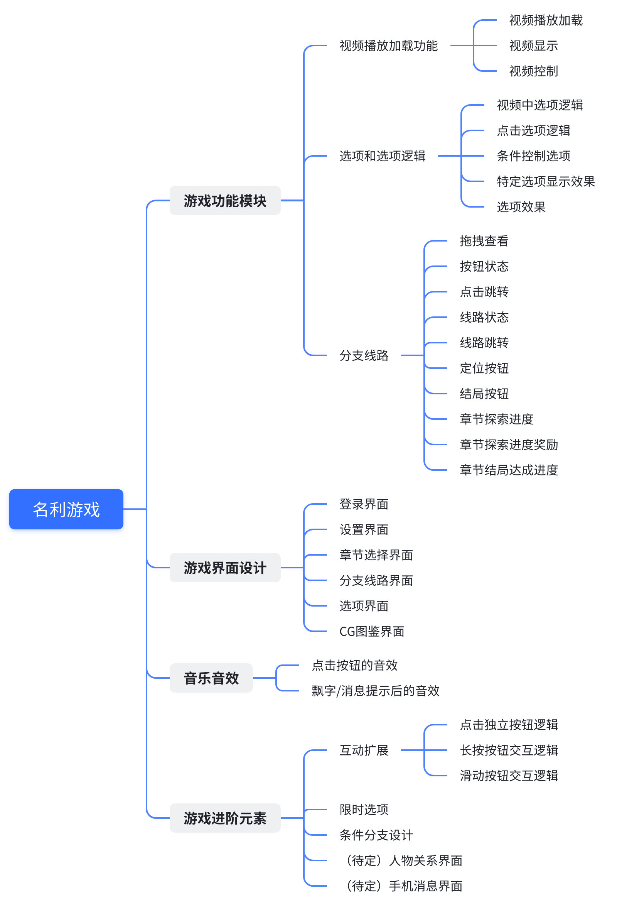

视频、选择与故事线的模块拆分


设计问题
如何把真人视频内容组织为可配置、可探索的互动叙事产品？
文档产出与来源
《名利游戏》策划案的功能导图，配合《附件二》《玩法功能需求清单》阅读。三份文档未署名，只用来说明项目需求范围；本人角色沿用已确认的主策划 / 执行制作人经历。
关键方案
- 将视频播放、选项逻辑、分支线路、界面及音效分为模块，区分内容承载、选择判断与探索反馈。
- 条件选项可锁定或隐藏；选择可触发片段跳转、关系变化或特定分支，点击后退出循环视频并隐藏选项。
- 故事线节点区分已解锁与未解锁，连线表达已走过路径；支持拖动、回到当前节点与已解锁片段跳转。
- 探索进度与结局进度分别定义；导图和正文中的待定功能、限时选项与扩展设想不作为最终上线承诺。